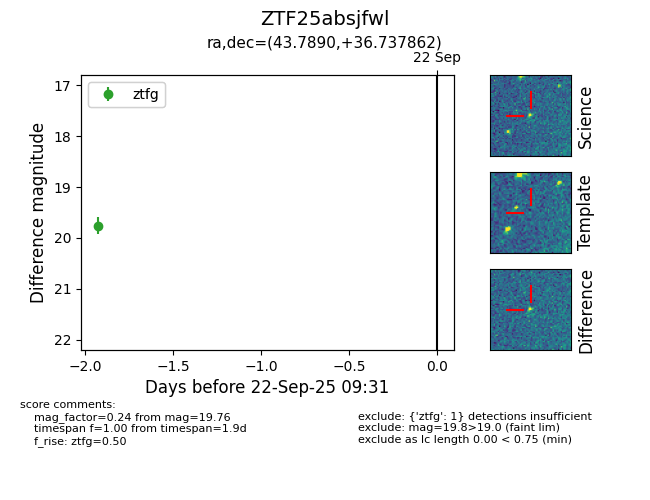

FINK: ZTF25absjfwl
Lasair: ZTF25absjfwl
ALeRCE: ZTF25absjfwl
ZTF25absjfwl (ztf,fink)
equatorial (ra, dec) = (43.7890,+36.73786)
galactic (l, b) = (148.8974,-19.81904)

last ztfg=19.76
1 ztfg detections